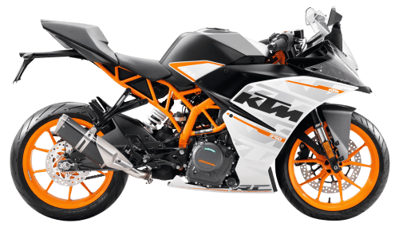
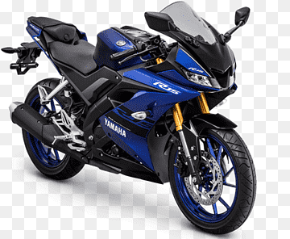
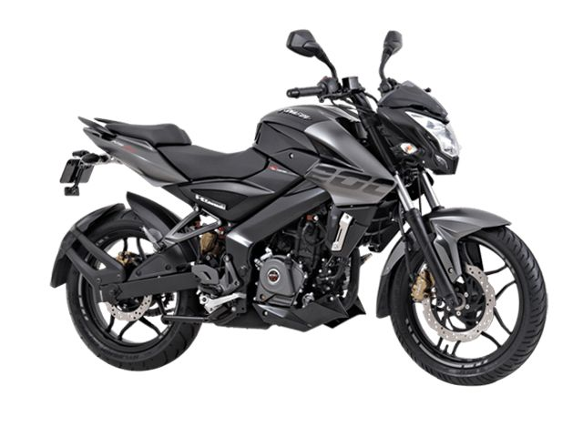

KTM
KTM AG (Kronreif & Trunkenpolz Mattighofen; formerly KTM Sportmotorcycle AG[4][5]) is an Austrian motorcycle, bicycle and sports car manufacturer owned by Pierer Mobility AG and the Indian manufacturer Bajaj Auto. It was formed in 1992 but traces its foundation to as early as 1934. Today, KTM AG is the parent company of the KTM Group, consisting of a number of motorcycle brands. KTM is known for its off-road motorcycles (enduro, motocross and supermoto). Since the late 1990s, it has expanded into street motorcycle production and developing sports cars – namely the X-Bow. In 2015, KTM sold almost as many street as off-road bikes.[6] From 2012, KTM was the largest motorcycle manufacturer in Europe for four consecutive years.[7][8] Globally, the company is among the leading off-road motorcycle manufacturers.[9][10] In 2016, KTM sold 203,423 motor vehicles worldwide.[11] History Hans Trunkenpolz and Ernst Kronreif Early years In 1934, an Austrian engineer Johann (Hans) Trunkenpolz (1909–1962)[12] set up a fitter's and car repair shop[13] in Mattighofen. In 1937, he started selling DKW motorcycles, and Opel cars the following year. His shop was known as Kraftfahrzeug Trunkenpolz Mattighofen, but the name was unregistered. During the Second World War, his wife took care of the business which was thriving mainly on account of diesel engine repairs.[14] After the war, demand for repair works fell sharply and Trunkenpolz started thinking about producing his own motorcycles. The prototype of his first motorcycle, the R100, was built in 1951.[15] The components of the motorcycle were produced in house, except for the Rotax engines which were made by Fichtel & Sachs. Serial production of the R100 started in 1953. With just 20 employees, motorcycles were built at a rate of three per day.[16] KTM 1953–1991 In 1953, businessman Ernst Kronreif became a major shareholder of the company, which was renamed and registered as Kronreif & Trunkenpolz Mattighofen. In 1954, the R125 Tourist was introduced,[17] followed by the Grand Tourist[18] and the scooter Mirabell[19] in 1955. The company secured its first racing title in the 1954 Austrian 125cc national championship.[20] In 1956, KTM made its appearance at the International Six Days Trials, where Egon Dornauer won a gold medal on a KTM machine.[21] In 1957, KTM built its first sports motorcycle, the Trophy 125cc.[22] KTM's first moped, named Mecky, was launched in 1957, followed by Ponny I in 1960 and Ponny II in 1962 and Comet in 1963.[23] The 1960s also saw the beginning of bicycle production in Mattighofen.
DUKE

The KTM 200 Duke is a 199.5 cc (12.17 cu in) single-cylinder standard motorcycle made by KTM since 2012.[1] It has a four-stroke, spark-ignition liquid-cooled engine. It has six-speed gearbox and a cable actuated multi-disc clutch. The bike has an underbelly exhaust and a three-chamber silencer positioned close to its centre of gravity. The Duke 200 is manufactured at Bajaj Autos Chakan Plant in India.[2] In Colombia, it is being assembled by the company Auteco S.A.[3] In Argentina, is being assembled by the company Simpa S.A. since March 2014. In the Philippines, it is being assembled by the company KTM Asia Motorcycle Manufacturing, Inc. (KAMMI) in Sta. Rosa, Laguna.[4] In August 2020 the Duke 200 was released in North America after previously only being available in Asian, European and South American markets. It also featured updated styling and few other components coming from Duke 390 to match other Duke models.[5] See also KTM 390 References "KTM Duke 200 launched by Bajaj Auto at Rs 1.18 lakh". The Economic Times. 25 January 2012. Retrieved 18 July 2012. Bajaj auto export indiancarsbikes.in[dead link] "La KTM Duke 390 será ensamblaeda por Auteco en la planta de la firma en Itagüí". La Republica. 13 December 2013. Retrieved 13 December 2013. "KTM's Laguna assembly plant's operation is now in full swing". www.topgear.com.ph. Retrieved 21 September 2018. Sena, Nic de (4 November 2020). "2020 KTM 200 Duke | First Ride Review | Rider Magazine". ridermagazine.com. Retrieved 5 March 2021.
R15
The Yamaha YZF-R15 is a single-cylinder sport bike made by Yamaha Motor Company in 2008.[1] In September 2011, the second iteration, called v2.0, was released in India,[2] and in April 2014 it was released in Indonesia.[3] In January 2017, the bike’s third iteration, v3.0, was launched in Indonesia.[4] Specifications The engine for the first and second iteration (v2.0) was a 149.5 cc single cylinder four-stroke engine with four valves and a single overhead camshaft. The bore and stroke were 57.0 mm × 58.7 mm (2.24 in × 2.31 in). This engine had a claimed 12.2 kW (16.4 hp) of power at 8,500 rpm and 14.5 N⋅m (10.7 lbf⋅ft) of torque at 7,500 rpm. The radiator is placed in the front of the engine with a fan behind it. The coolant reserve is on the left side up and behind the radiator. The transmission is a return type six-speed with a constant mesh wet multi-plate clutch. For the first and second iteration, the bike had a 270 mm (11 in) single disc with dual piston calipers in the front and a 220 mm single disc single piston caliper at the rear, both the brake systems being made by Nissin of Japan. The front suspension was a twin telescopic fork and the rear is a linked type single shock suspension. The bike has dual headlights like the other bikes of the YZF-R series. For the 2017 update, the bike has a newer 155.1 cc engine. The bore and stroke are 58.0 mm × 58.7 mm (2.28 in × 2.31 in). This engine also get Variable Valve Actuation (VVA) technology and has a claimed 14.2 kW (19.0 hp) of power at 10,000 rpm and 14.7 N⋅m (10.8 lbf⋅ft) of torque at 8,500 rpm. The front disc is larger than the previous iteration, with a measured 282 mm (11.1 in). The front suspension is now an inverted twin telescopic fork. This iteration also features assist and slipper clutch.[1] v2.0
PULSAR NS 200
The Bajaj Pulsar NS200, previously known as Bajaj Pulsar 200NS, is a sports bike made by Indian motorcycle manufacturer Bajaj Auto. "NS" stands for Naked Sports. History Bajaj Automotive launched the Pulsar 200NS in 2012 December. It later discontinued the 200NS, improved the performance and relaunched the 200NS in 2017 as NS200.[2] The motorcycle is now available with dual channel ABS, upside-down front fork suspension and two new colours: white and black. This new white colour scheme was a popular choice among younger drivers. Its present top competitors are the TVS Apache RTR 2004V and KTM Duke 200. Design The NS200 is a street-fighter style motorcycle and well known for its wolf like look. It offers a digital instrument cluster and an upright seating position. It has a single-cylinder, four-stroke, triple spark-ignition & liquid-cooled engine. It uses a pressed steel perimeter frame and a box section swingarm, and has an underbelly exhaust, and rear nitrox-charged mono-shock suspension. References
ROYAL ENFIELD

After the Indian Independence Act 1947 the new government looked for a suitable motorcycle for its army to patrol the country's border. In 1952 the Royal Enfield Bullet was chosen as the most suitable bike for the job. In 1954, the government ordered 800 in units of the 350 cc model. In 1955, the Redditch company partnered with Madras Motors in India to form 'Enfield India' to assemble, under licence, the 350 cc Royal Enfield Bullet motorcycle in Madras (now called Chennai). The tooling was sold to Enfield India so that they could manufacture components.[7] By 1962, all the components were made in India. The Indian Enfield uses the 1960 engine (with metric bearing sizes), Royal Enfield still makes an essentially similar bike in the 350 cc and 500 cc models, along with several different models for different market segments.[8] In the year 1990, Royal Enfield collaborated with the Eicher Group, an automotive company in India, and merged with it in 1994.[9] Apart from bikes, Eicher Group is involved in the production and sales of commercial vehicles and automotive gears. Although Royal Enfield experienced difficulties in the 1990s, and ceased motorcycle production at their Jaipur factory in 2002,[10] by 2013 the company opened a new primary factory in the Chennai suburb of Oragadam on the strength of increased demand for its motorcycles. This was followed in 2017 by the inauguration of another new factory of a similar size to the facility at Oragadam (capacity 600,000 vehicles per year) at Vallam Vadagal. The original factory at Tiruvottiyur became secondary, and continues to produce some limited-run motorcycle models.[11][12][13][14] Flooding, produced by the heaviest rainfall in Chennai in over a century, caused Royal Enfield to cut production by 4,000 motorcycles in November 2015, followed by a shutdown of the plants in Thiruvottiyur and Oragadam on 1 December, as well as the company offices in Chennai.[15] Production resumed at 50% capacity on 7 December and operations at both plants were back to normal on 14 December.[16] Royal Enfield announced its first takeover of another company in May, 2015 with the purchase of a UK motorcycle design and manufacturing firm, Harris Performance Products,[17][18] that had previously developed the chassis of the Royal Enfield Continental GT Cafe Racer.[19] Harris work with the UK-based part of Royal Enfield's development team, who are based at the UK Technology Centre at Bruntingthorpe Proving Ground in Leicestershire. The team was established in January 2015, and moved into their new, purpose-built facility in May 2017. By the end of 2019, the team numbered 155 and carries out the full spectrum of design and development activities, from concept generation and clay design to engineering design, prototyping and validation. Royal Enfield currently sells motorcycles in more than 50 countries. Royal Enfield surpassed Harley-Davidson in global sales in 2015.[20][21] Continental GT 535 2014 2014 Continental GT 535 In August 2015, Royal Enfield Motors announced it is establishing its North American headquarters and a dealership in Milwaukee, Wisconsin, with the intention to offer three bikes, the Bullet 500, Classic 500 and Continental GT 535 Cafe Racer as they feel this engine size represents an under-served market. The dealership will be Royal Enfield's first company-owned store in the U.S., according to Rod Copes, president of Royal Enfield North America.[22][23] The company wants to establish about 100 dealerships in American cities starting with Milwaukee.